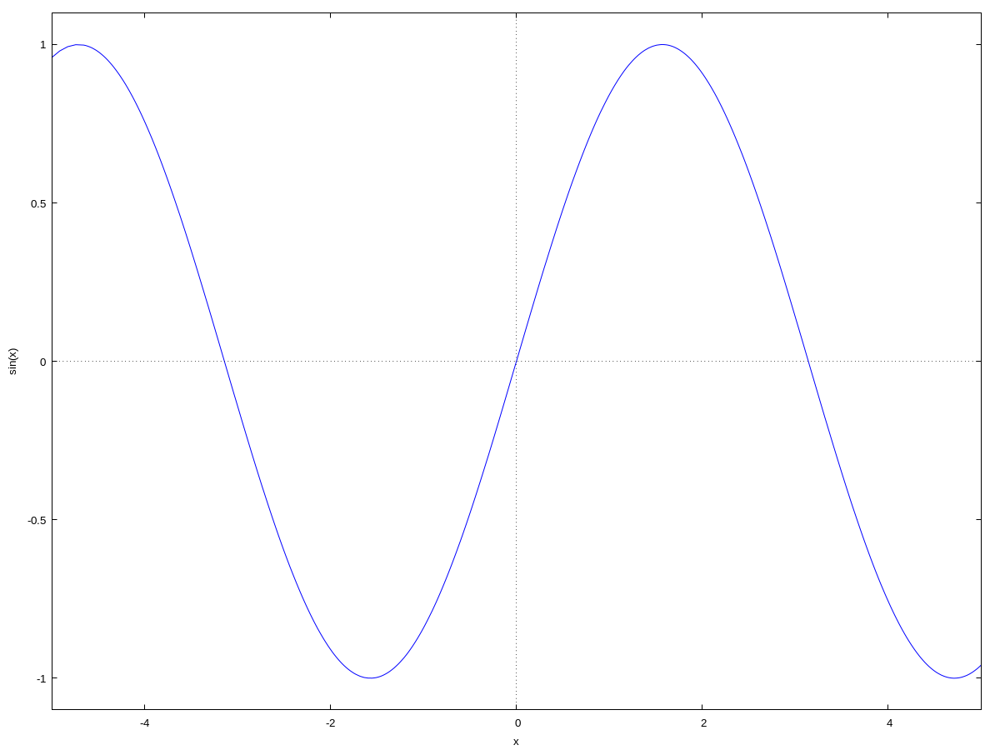
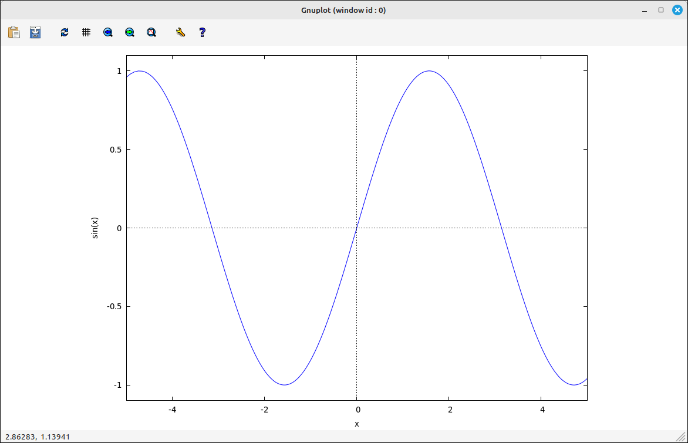
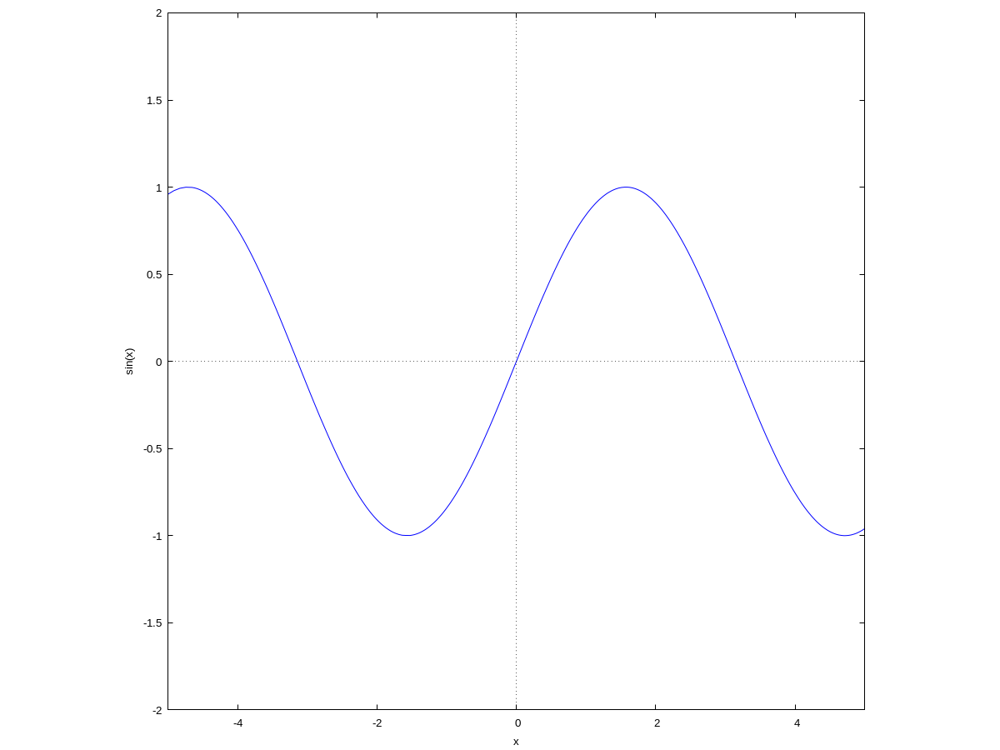
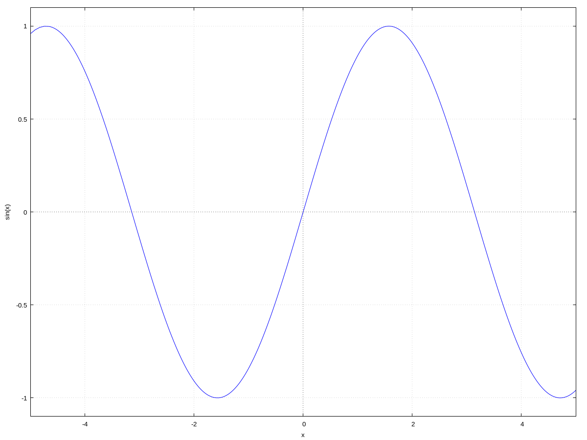

2D Graphs#
There are several ways to get the plot of a function and there are several different types of plots you can create with wxMaxima. We will not go over all of them here but discuss them as needed in the tutorials.
plot2d and wxplot2d#
To do a 2D plot you can use the menu system to input one or you can use the command (either plot2d or wxplot2d). Using the menu will bring up a dialog box with the following options.
Expression: This is the expression that will be plotted. It can be any legitimate Maxima expression, including CAS input and output designations.
Variable: This is the independent variable to use for the horizontal axis. The user can also set the range of the viewable portion of the axis and select if the axis is in a linear scale or a logarithmic scale.
Variable: This is the dependent variable to use for the vertical axis. The user can also set the range of the viewable portion of the axis and select if the axis is in a linear scale or a logarithmic scale. If the bounds are left as 0 for both the lower and upper bounds the program will automatically select bounds based on the functional values over the domain. This can be a nice feature for some functions but if the function has vertical asymptotes the vertical range will be very large and the image hard to read.
Ticks: This sets the tick marks for the image.
Format: This sets the place the image is displayed. If inline, the image will be placed in the workspace with all the other outputs. If gnuplot, the image will be put into an external “gmuplot” window. The gmuplot window has more features for manipulating the image but the inline keeps the image with the rest of the calculations. If xmaxima, the image will be put into an external “xmaxima” window, this has some options but the gmuplot window has more facilities.
Options: This drop-down box has several other options for the plot.
File: This designates if the image is to be saved to a file. If left blank the image is plotted on the screen. The file type is eps (encapsulated postscript), you can use image processing software to change it to another file format such as png, jpg, etc.
For example, if we plot \(f(x) = \sin(x)\) with the default options, inline, wxMaxima creates the command,
wxplot2d([sin(x)], [x,-5,5])
and the following image would be added to the workspace,

\(\sin(x)\) in Inline Format#
Had we used the gmuplot format we would have gotten the following command,
plot2d([sin(x)], [x,-5,5])
The image would be placed in a new window and no image added to the workspace,

\(\sin(x)\) in gmuplot Window#
Note that the new window has a toolbar for some zooming options, plot options, as well as file saving and clipboard copying.
Note
Specifying other options in the dialog will add in other parameters to the command. For example, setting the y bounds to \([-2, 2]\) and the option to “the “set size ratio 1; set zeroaxis;” we get the command,
wxplot2d([sin(x)], [x,-5,5], [y,-2,2], [gnuplot_postamble, "set size ratio 1; set zeroaxis;"])
and the image,

\(\sin(x)\) with Other Options#
setting the option to “set grid;” we get the command,
wxplot2d([sin(x)], [x,-5,5], [gnuplot_postamble, "set grid;"])$
and the image,

\(\sin(x)\) with Other Options#
There are many other options for plotting, you should consult the Maxima help system or online resources for details.